Integração com o QGIS¶
Como vimos no Capítulo 10, um SGBD usa a arquitetura cliente/servidor. Na integração com um SIG, o SIG é o cliente e o PostgreSQL/PostGIS é o servidor. Neste capítulo, conectaremos o QGIS ao banco, importaremos camadas, faremos consultas espaciais a partir do SIG e veremos que o mesmo banco pode ser usado por outros SIGs.
🔌 Conectando a um banco de dados¶
Dado um banco de dados já criado (por exemplo, o curso do Capítulo 12), o primeiro passo é criar uma conexão entre o QGIS (cliente) e o SGBD (servidor). Há vários caminhos para isso no QGIS; o mais simples é pelo painel Navegador: clique com o botão direito no item PostgreSQL (em versões antigas, PostGIS) e escolha Nova Conexão...
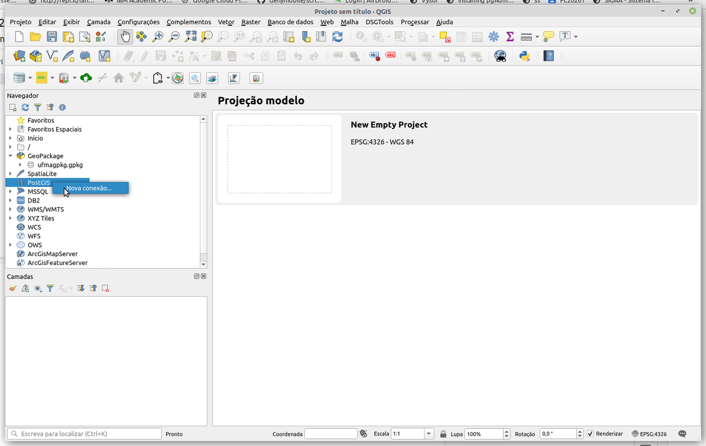
Na janela que se abre, informe:
- Nome: um nome que facilite encontrar a conexão no futuro (ex.:
curso-local); - Host: o endereço do servidor —
localhostse o SGBD estiver no mesmo computador; - Porta:
5432; - Banco de dados: o nome de um banco já existente (ex.:
curso); - Autenticação: na aba Básico, o usuário (
postgres) e a senha. Marque Armazenar se não quiser digitá-los a cada vez.
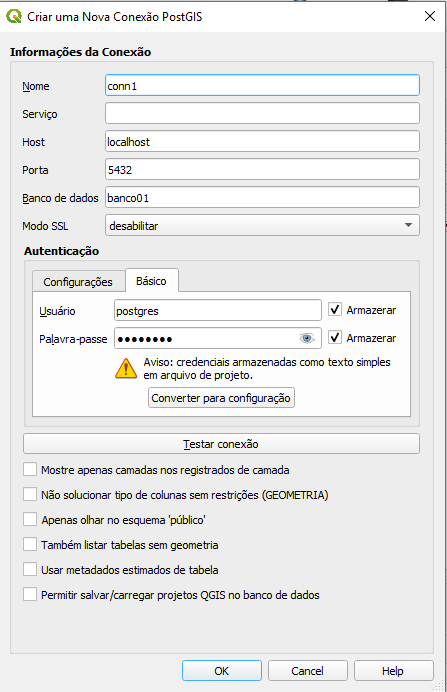
Clique em Testar Conexão. Se tudo estiver certo, a mensagem de sucesso aparece e a conexão passa a ser listada no Navegador, com os esquemas e as tabelas do banco. As tabelas espaciais (como uf e capital, do Capítulo 15) podem ser arrastadas para o mapa como qualquer camada.
Problemas comuns de conexão
- Connection refused: o servidor não está em execução, ou a porta está errada.
- password authentication failed: usuário ou senha incorretos.
- database "..." does not exist: o banco precisa ser criado antes (no pgAdmin ou com
CREATE DATABASE). - A tabela aparece, mas sem geometria: verifique se o PostGIS foi ativado nesse banco (
CREATE EXTENSION postgis;).
📥 Importando e visualizando dados vetoriais¶
Com a conexão criada, podemos inserir dados a partir de formatos de intercâmbio — em vez de digitar INSERTs, como fizemos no Capítulo 14.
1. Crie um esquema. Um esquema (schema) é uma "pasta" dentro do banco, que agrupa tabelas. É uma boa prática inserir os dados em um esquema diferente do public, que o PostgreSQL e o PostGIS usam para metadados (como a spatial_ref_sys). Clique com o botão direito na conexão e escolha Novo Esquema...; crie o esquema brasil:
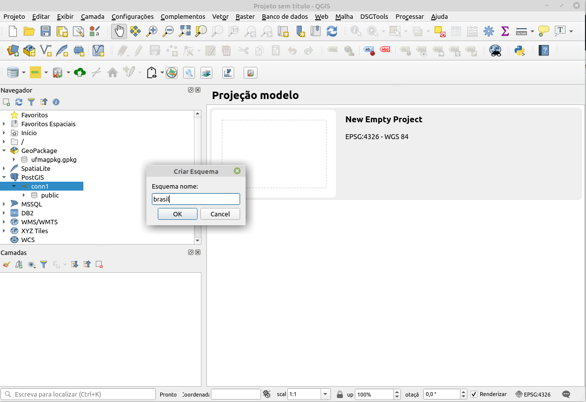
O mesmo pode ser feito em SQL:
2. Abra o Gerenciador de Banco de Dados. No menu Banco de Dados → Gerenciador BD..., expanda o provedor PostGIS, a conexão criada e selecione o esquema brasil:
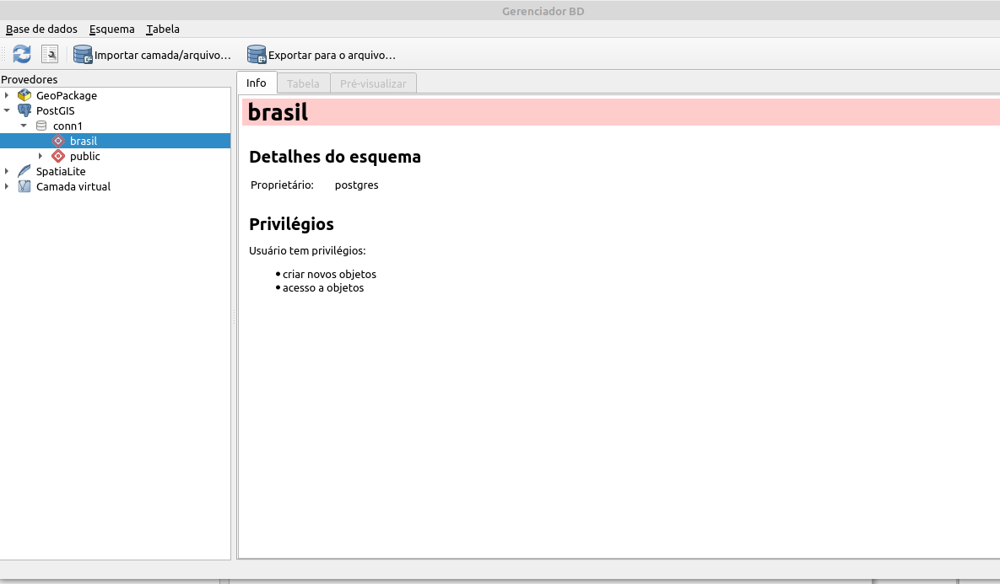
3. Importe a camada. Clique no botão Importar camada/arquivo. Na janela, escolha a camada de entrada (um arquivo shapefile ou uma camada já aberta no projeto — aqui, os municípios do Brasil) e preencha as opções:
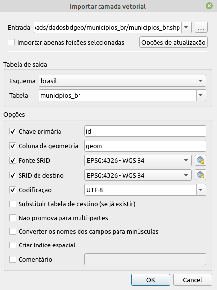
- Esquema e Tabela: o destino (
brasil.municipios_br); - Chave primária e Coluna de geometria: os nomes das colunas (ex.:
idegeom); - SRID de origem e SRID de destino: o SRC dos dados e o SRC em que serão gravados — se forem diferentes, o QGIS faz a transformação;
- Codificação: normalmente
UTF-8; - Criar índice espacial: marque sempre.
4. Visualize. Após a importação, a nova tabela aparece no Gerenciador, com informações sobre o tipo de geometria, o SRID, o número de registros e os campos. Um duplo clique (ou arrastar para o mapa) adiciona a camada ao projeto.
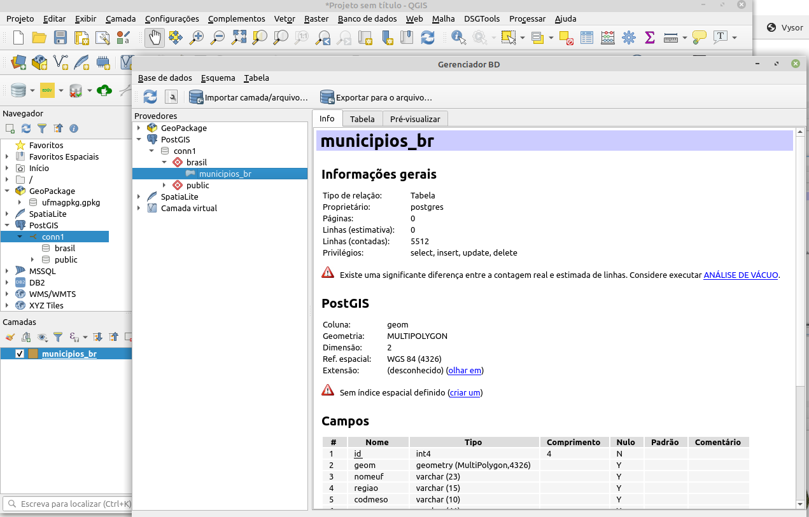
Outra forma: a ferramenta de processamento
Na Caixa de Ferramentas de Processamento, o algoritmo Banco de dados → Exportar para PostgreSQL faz a mesma importação e pode ser executado em lote para vários arquivos.
🧮 Consultas SQL a partir do QGIS¶
O Gerenciador de Banco de Dados tem uma janela SQL (botão Janela SQL, ou F2), em que podemos executar qualquer consulta — inclusive as consultas espaciais do Capítulo 15 — e carregar o resultado como uma nova camada. Por exemplo, as UFs atravessadas pela ferrovia, com a extensão da ferrovia em cada uma:
SELECT u.gid, u.sigla_uf,
ST_Length(ST_Intersection(f.geom, u.geom)::geography) / 1000 AS km,
u.geom
FROM uf u
JOIN ferrovia f ON ST_Intersects(f.geom, u.geom);
Execute a consulta e marque Carregar como nova camada, indicando a coluna com valores únicos (gid) e a coluna de geometria (geom). O resultado aparece no mapa como uma camada comum, que pode ser estilizada, rotulada ou exportada.
Camadas virtuais e o filtro de camadas
Duas outras formas de usar SQL no QGIS: o Construtor de consultas (botão direito na camada → Filtrar...), que aplica uma condição WHERE à camada, e as camadas virtuais (Camada → Adicionar Camada → Adicionar/Editar Camada Virtual), que permitem consultas SQL espaciais até sobre arquivos shapefile e GeoPackage.
🔄 Integrando com outros SIGs¶
Uma vantagem de usar um banco de dados geográfico como o PostGIS é poder acessar os mesmos dados a partir de diferentes SIGs, já que eles não estão em um formato específico de um programa. O TerraView, desenvolvido pelo INPE, é um exemplo:
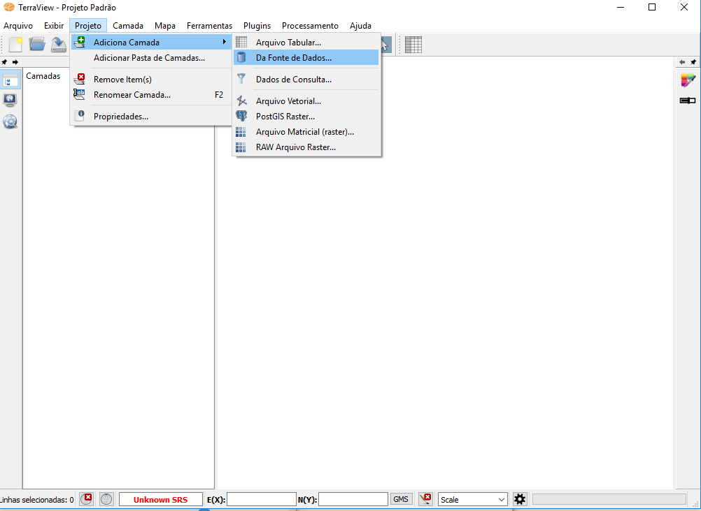
Na tela principal, adiciona-se uma camada pelo menu Projeto → Adicionar Camada → Da Fonte de Dados.... Na janela Seletor de Fonte de Dados, seleciona-se PostGIS, e a janela de conexão pede as mesmas informações que o QGIS: servidor, porta, usuário, senha e banco de dados.
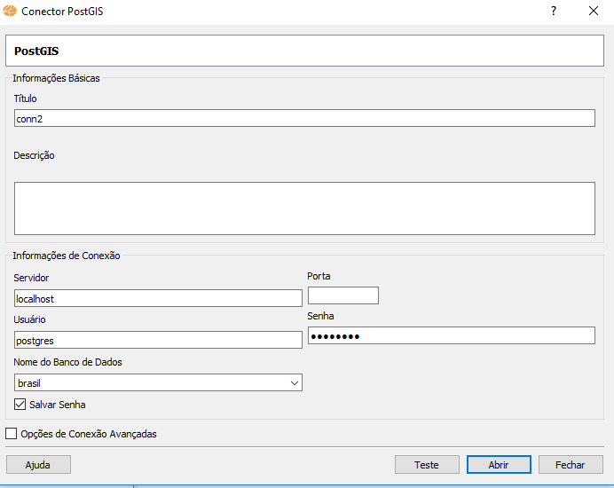
Configurada a conexão, o mesmo dado importado pelo QGIS é exibido no TerraView:
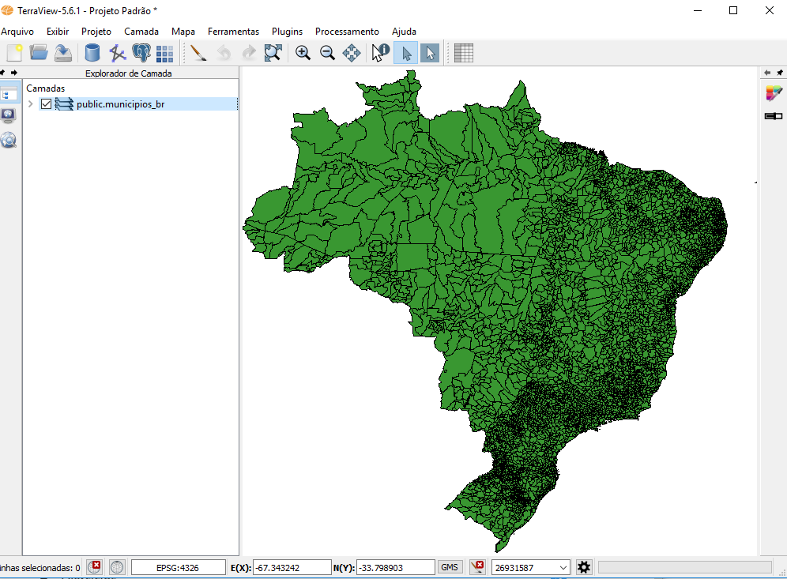
O mesmo vale para o ArcGIS, o gvSIG, o GeoServer (que publica os dados como serviços web WMS/WFS) e para bibliotecas de programação, como o GeoPandas (Python) e o sf (R). O banco de dados passa a ser o ponto central dos dados geográficos de uma instituição.
💡 Dica: relatório de valores únicos de um raster¶
Embora esta parte trate de dados vetoriais, o QGIS também processa dados matriciais — por exemplo, imagens exportadas do Google Earth Engine na Parte 1. Uma tarefa comum é contar quantos pixels há de cada classe em uma imagem classificada. No menu Processamento, abra a Caixa de Ferramentas e pesquise por raster layer unique:
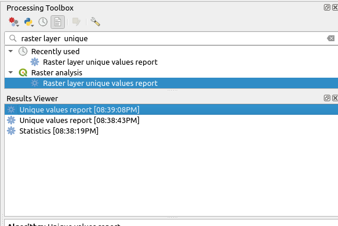
Na caixa de diálogo, selecione o raster e clique em Executar:
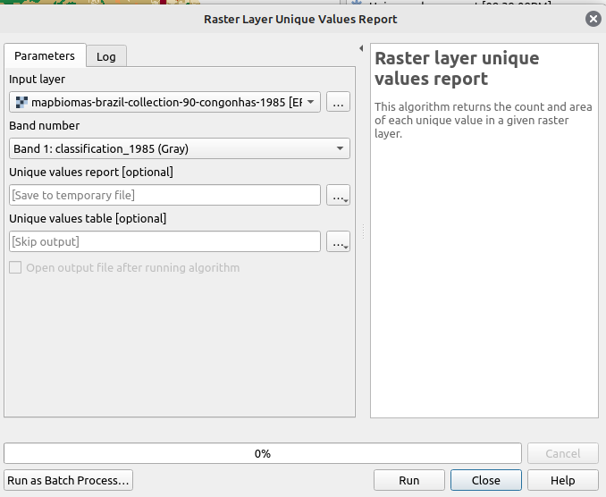
O resultado é um documento HTML; clique no link para abri-lo:
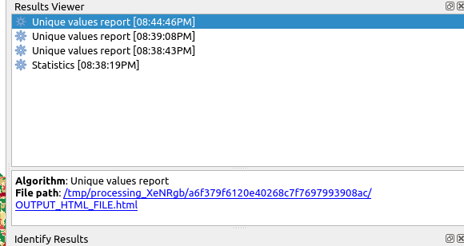
O relatório lista cada valor, a quantidade de pixels e a área correspondente:
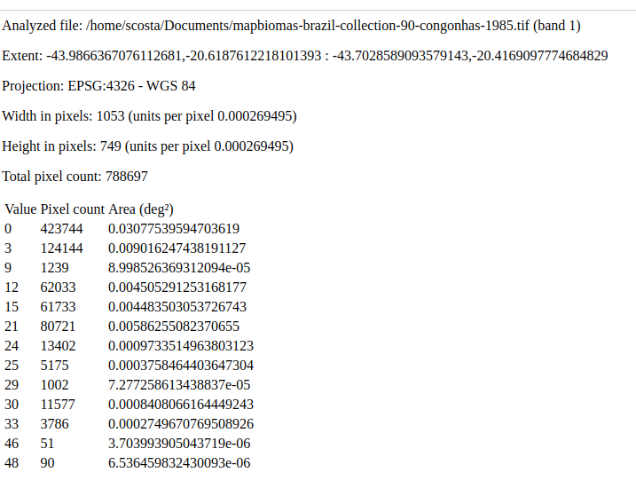
Saiba mais sobre a Caixa de Ferramentas de Processamento no manual do QGIS.
📝 Síntese¶
- No QGIS, uma conexão PostgreSQL/PostGIS informa servidor, porta, banco e credenciais.
- Organize os dados em esquemas e importe camadas pelo Gerenciador BD, sempre criando o índice espacial.
- A janela SQL executa consultas espaciais e carrega o resultado como camada.
- Um banco geográfico permite que vários SIGs e usuários acessem os mesmos dados.
✏️ Exercícios¶
- Explique as duas formas de integrar bancos de dados geográficos e sistemas de informação geográfica e por que a arquitetura integrada favorece o uso de vários SIGs.
- Crie uma conexão do QGIS com o banco
curso, importe o arquivo BR_UF.zip para um esquemabrasile crie um mapa categórico por região. - Pela janela SQL, carregue como camada apenas as UFs que fazem divisa com o seu estado.
- Conecte o QGIS ao banco de um colega (peça ao professor para liberar o acesso pela rede). O que precisa mudar na conexão?